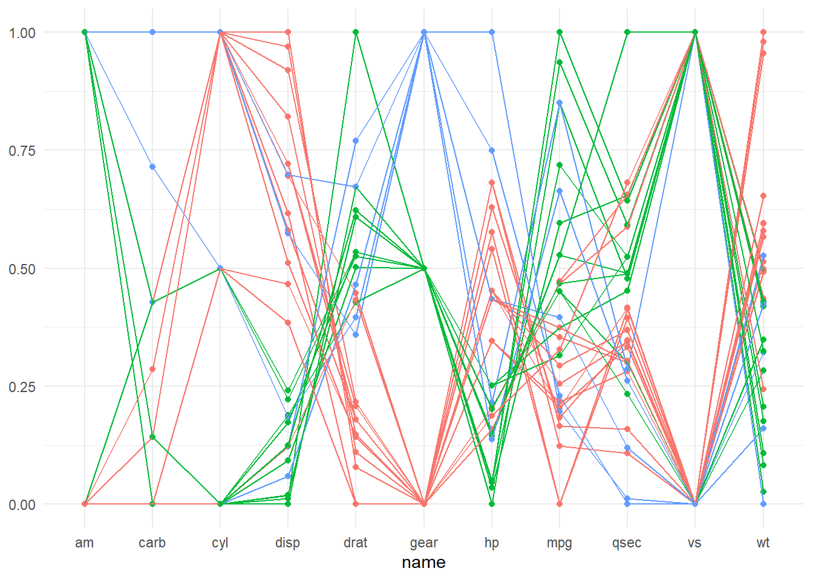
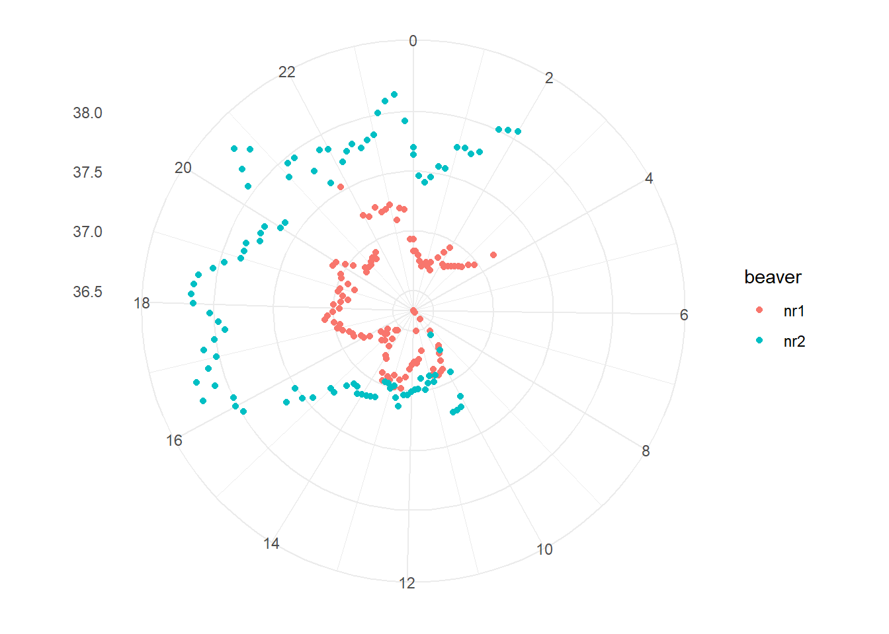

library(dplyr)
library(tidyr)
library(ggplot2)Infovis 2: Übung B
In dieser Übung bauen wir einige etwas unübliche Plots aus der Vorlesung nach. Dafür verwenden wir Datensätze, die in R bereits integriert sind. Eine Liste dieser Datensätze findet man hier oder mit der Hilfe ?datasets.
Dazu verwenden wir nach wie vor ggplot2, aber mit einigen Tricks.
Aufgabe 1: Parallel coordinate plots
Erstelle einen parallel coordinate plot. Dafür eignet sich der integrierte Datensatz mtcars. Extrahiere die Fahrzeugnamen mit rownames_to_column.
Zudem müssen die Werte jeweiles auf eine gemeinsame Skala normalisiert werden. Hierfür kannst du die Funktion scales::rescale verwenden.
Musterlösung
mtcars2 <- mtcars |>
tibble::rownames_to_column("car") |>
pivot_longer(-car)
mtcars2 <- mtcars2 |>
group_by(name) |>
mutate(value_scaled = scales::rescale(value))So sieht der fertige Plot aus:
Musterlösung
mtcars2 <- mtcars2 |>
group_by(car) |>
mutate(gear = value[name == "gear"])
ggplot(mtcars2, aes(name, value_scaled, group = car, color = factor(gear))) +
geom_point() +
geom_line() +
theme_minimal() +
theme(legend.position = "none", axis.title.y = element_blank())
Aufgabe 2: Polar Plot mit Biber Daten
Polar Plots eignen sich unter anderem für Daten, die zyklischer Natur sind, wie zum Beispiel zeitlich geprägte Daten (Tages-, Wochen-, oder Jahresrhythmen). Aus den Beispiels-Datensätzen habe ich zwei Datensätze gefunden, die zeitlich geprägt sind:
Beide Datensätze müssen noch etwas umgeformt werden, bevor wir sie für einen Radialplot verwenden können. In Aufgabe 2 verwenden wir die Biber-Datensätze, in der nächsten Aufgabe (3) die Passagier-Daten.
Wenn wir die Daten von beiden Bibern verwenden wollen, müssen wir diese noch zusammenfügen:
Musterlösung
beaver1_new <- beaver1 |>
mutate(beaver = "nr1")
beaver2_new <- beaver2 |>
mutate(beaver = "nr2")
beaver_new <- rbind(beaver1_new,beaver2_new)Zudem müssen wir die Zeitangabe noch anpassen: Gemäss der Datenbeschreibung handelt es sich bei der Zeitangabe um ein sehr programmier-unfreundliches Format. 3:30 wird als “0330” notiert. Wir müssen diese Zeitangabe, noch in ein Dezimalsystem umwandeln:
Musterlösung
beaver_new <- beaver_new |>
mutate(
hour_dec = (time/100)%/%1, # Ganze Stunden (mittels ganzzaliger Division)
min_dec = (time/100)%%1/0.6, # Dezimalminuten (15 min wird zu 0.25, via Modulo)
hour_min_dec = hour_dec+min_dec # Dezimal-Zeitangabe (03:30 wird zu 3.5)
) So sieht der fertige Plot aus:
Musterlösung
# Lösung Aufgabe 2
beaver_new |>
ggplot(aes(hour_min_dec, temp, color = beaver)) +
geom_point() +
scale_x_continuous(breaks = seq(0,23,2)) +
coord_polar() +
theme_minimal() +
theme(axis.title = element_blank())
Aufgabe 3: Raster Visualisierung mit Flugpassagieren
Analog Aufgabe 2, dieses Mal mit dem Datensatz AirPassanger
AirPassengers kommt in einem Format daher, das ich selbst noch gar nicht kannte. Es sieht zwar aus wie ein data.frame oder eine matrix, ist aber von der Klasse ts.
Musterlösung
AirPassengers
class(AirPassengers)Damit wir den Datensatz verwenden können, müssen wir ihn zuerst in eine matrix umwandeln. Wie das geht habe ich hier erfahren.
Musterlösung
AirPassengers2 <- tapply(AirPassengers, list(year = floor(time(AirPassengers)), month = month.abb[cycle(AirPassengers)]), c)
AirPassengers2Aus der matrix muss noch ein Dataframe her, zudem müssen wir aus der breiten Tabelle eine lange Tabelle machen:
Musterlösung
AirPassengers3 <- AirPassengers2 |>
as.data.frame() |>
tibble::rownames_to_column("year") |>
pivot_longer(-year, names_to = "month", values_to = "n") |>
mutate(
# ich nutze einen billigen Trick um ausgeschriebene Monate in Nummern umzuwandeln
month = factor(month, levels = month.abb,ordered = T),
month_numb = as.integer(month),
year = as.integer(year)
)So sieht der fertige Plot aus:
Musterlösung
ggplot(AirPassengers3, aes(month, year, fill = n)) +
geom_raster() +
scale_y_reverse() +
scale_fill_viridis_c(guide = guide_colourbar(barwidth = 15, title.position = "top")) +
theme_minimal() +
labs(fill = "Anzahl Passagiere") +
coord_equal() +
theme(axis.title = element_blank(), legend.position = "bottom")